○○な子育てママ・パパ、
○○な妊婦さん（プレママ）にリーチしたい。
子育てメディアbabycoへの広告掲載で、
そんな広報担当者様の狙いが形になります。
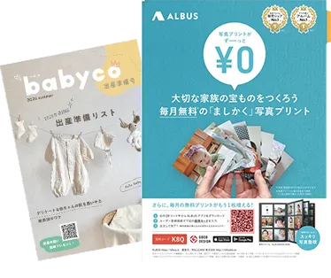
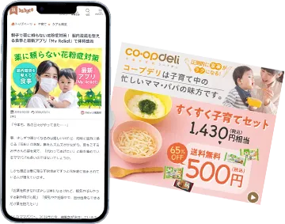
よくあるお悩み子育て世帯向けの広告・広報で、
こんなお悩みはありませんか？
- 子育てママ・パパや妊婦さんに届くメディア（広告媒体）が見つからない
- 商品やサービスの魅力を、どのメディアでどう伝えるべきか分からない
- 認知を広げるだけでなく、購買・申込・来場などの行動にもつなげたい
- Web広告だけではリーチできない層（紙面派・体験派）に接触したい
- 単発の広告掲載で終わらず、ターゲットとの継続的な接点づくりも考えたい
- 出稿後の反応を見ながら、アンケートなど次のマーケティング施策まで改善していきたい
子育てメディアbabycoにお任せください。
babycoは、子育て世帯に届くメディア（広告媒体）としての活用はもちろん、
その後の効果検証や次のマーケティング施策まで見据えた提案が可能です。
babycoが叶える広告出稿広告手法
タイアップ記事、メルマガ、SNS、紙面、イベント連動施策など、
目的に応じて最適な接点を組み合わせてご提案します。
タイアップ記事広告
商品・サービスの魅力を共感されやすい文脈で伝えたいときに有効です。企画のご提案からいたします。
紙面にも掲載できます。
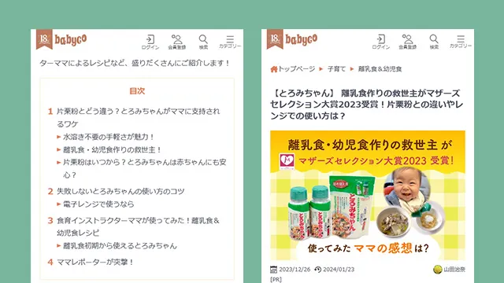
紙面広告
プレママ、産後ママを中心にbabycoの会員以外のターゲット、潜在層にもリーチできます。
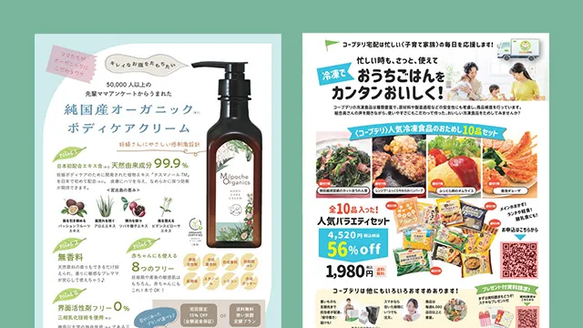
SNS広告
babyco公式アカウント（Instagram、X等）を活用し、良質で感度の高いフォロワーや子育て層にPR投稿を届けます。アンバサダーママもいるため拡散も期待できます。
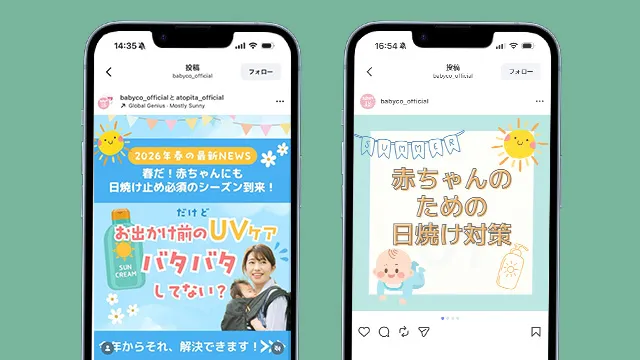
バナー広告
babyco Webサイト内の高トラフィック枠に、貴社クリエイティブを掲載。視覚的なアプローチで、Webサイトへの誘導やキャンペーン認知を強力にサポートします。
メールマガジン広告
妊娠週数や子どもの月齢などのセグメントで絞り込んだ会員へダイレクトに届けたいときに有効です。
商品・サービスのフェーズに合わせたマーケティング策をご提案
- 調査・インサイト（深掘り）
- 認知・拡散（広める）
- 共感・理解（自分事化）
- 購買・参加（行動）
- ファン化・継続（絆）
- 共創・推奨（広がる）
babycoが選ばれる理由子育て世帯向け広告に選ばれる3つの理由
babycoは、子育てママ・パパ、妊婦に届くメディア（広告媒体）として、
精度の高いアプローチと多彩な接点設計ができることが特長です。
圧倒的なターゲット精度
- 約30万人の会員基盤に毎月6,000人以上の新規会員データを活用できる会員制メディア
- 妊娠週数や子どもの月齢、子供の人数、居住地域など多彩なセグメント情報を保有
- 匿名性の高い一般メディアと比べ、CPAが抑制しやすい
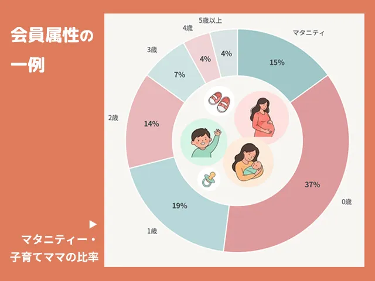
デジタル×リアルを繋ぐ5つの接点
- Web、紙面、SNS、メルマガ、プロモーションイベントという複数の接点を活用
- 拡大から理解促進、購入、参加申込、ファン化、モニタリングまで設計可能
- 単発露出で終わらないターゲットとの接点づくりが可能
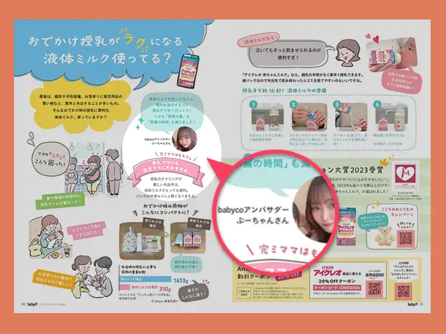
子育てのプロによる“刺さる”企画提案
- 子育て世帯向けメディア運営・市場調査・イベント企画の知見を活用
- ママ・パパに届きやすい切り口や見せ方、クリエイティブを提案
- Niko Worksならではのネットワークで、有識者やキャラクターを起用した企画提案にも対応
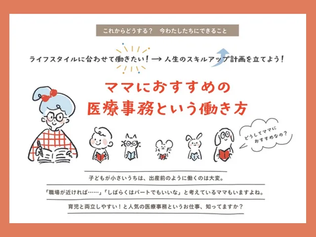
babycoへの広告出稿についてご相談だけでもお気軽に
（受付 平日10：00～19：00）
広告と相性の良い施策ニーズに応じて他のマーケティング施策もご提案
Niko Worksは、メディア運営・市場調査・イベント企画の3柱を持つ「子育て支援総合マーケティングカンパニー」です。
babycoへの広告枠の提供だけではなく、貴社の商品・サービスの課題やフェーズに合わせ、
成果を最大化するためのマーケティング施策を一気通貫で設計しご提案することもできます。
市場背景に基づいた手法選定
認知拡大から理解促進、申込・来場、ファン化まで、課題に最適な施策をプロの視点でご提案します。
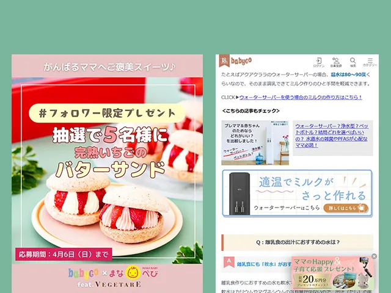
戦略的な施策の掛け合わせ
タイアップ記事、メルマガ、SNS、イベント、調査などをバラバラに実施せず、相乗効果を生む全体設計をご提案します。
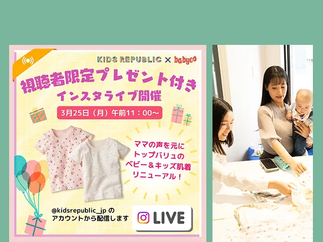
データに基づく検証と改善
広告出稿後のユーザーの反応を丁寧に分析します。得られたインサイトを共有して「次に強化すべき打ち手」を整理してアクションへ繋げます。
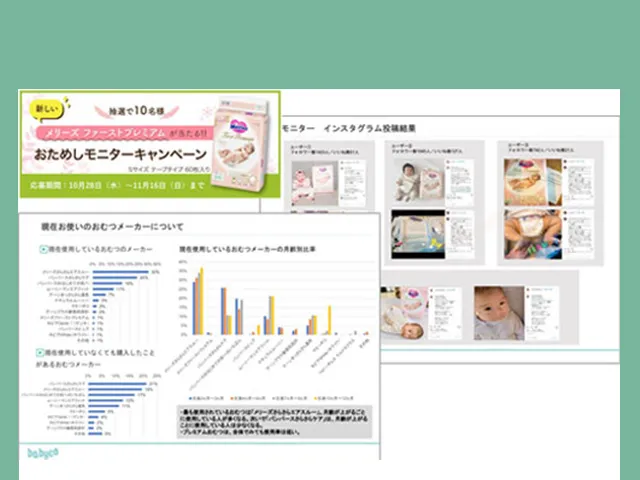
次なるマーケティング施策への展開
広告で得た接点を活かし、アンケート、モニター調査、口コミ施策、体験型イベント企画など、中長期的な支援が可能です。
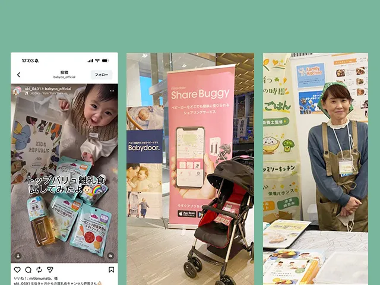
Niko Worksは単にbabycoの広告枠の販売ではなく、
子育て世帯向けマーケティングの成功を共に創るパートナーとして、
貴社の事業成長に貢献します。
広告～マーケティング支援実績課題に応じて、広告出稿からその先までご提案
Niko Worksでは、広告掲載だけでなく業種や目的に応じて、調査・体験・継続接点まで含めた「トータルマーケティング」のご提案が可能です。
子育て世帯向け施策の考え方から丁寧に設計いたします。
広告出稿case1認知拡大を目的とした新商品PR
- クライアント
- 大手玩具メーカー
- 目的
- 認知拡大を目的とした新商品PR
- 課題
- 子育て世帯への認知を短期間で広げたい
- 提案
- タイアップ記事広告＋メルマガ＋SNS活用
- 期待できること
- 商品理解と認知拡大の両立
- 費用概算
- 100万円
- 成果
- 年間売上目標の約30％を発売直後の1ヵ月で達成
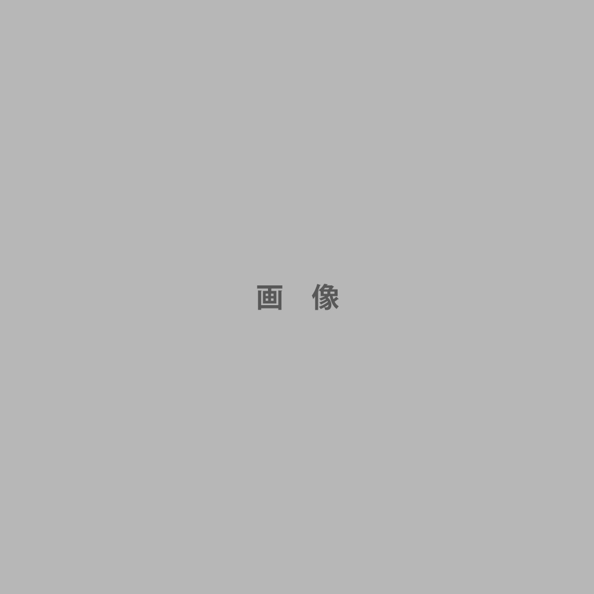
広告出稿case2プレ体験・来場者数の増加
- クライアント
- 郊外型レジャー施設
- 目的
- 来場者数の増加
- 課題
- 広告接触だけでなく、実際にターゲットとのタッチポイントを持ちたい
- 提案
- メルマガ広告+プレ体験イベント＋SNS活用
- 期待できること
- 認知拡大、見込み顧客獲得、来場者数増加
- 費用概算
- 300万円
- 成果
- プレ体験イベント来場者数：300名（2日間）
来場者数前年同月比約120％達成
広告出稿case3商品改善も見据えた長期支援
- クライアント
- 幼児衣料メーカー
- 目的
- 認知拡大を目的とした新商品PR
- 課題
- 訴求の方向性、ターゲット設計が合っているか検証できていない。ブランディングができていない。
- 提案
- 広告出稿＋モニター施策＋アンケート調査
- 期待できること
- 反応の可視化、改善材料の取得、次施策の精度向上、ブランディング
- 費用概算
- 400万円
- 成果
- 商品のマイナーチェンジ実施で口コミ評価アップ
実績事例は只今準備中
この他にも幅広い業界の子育て・ファミリー向け商材を支援
- 大手総合小売企業
- 大手総合素材・化学メーカー
- 大手総合消費財メーカー
- 大手家具・インテリア小売企業
- 医薬品・ベビー用品メーカー
- 不動産事業者
- ・・・など
認知拡大、リード獲得、来場促進、調査、ファン化など、目的に応じて最適な施策をご提案します。
子育てメディアbabycoへの広告出稿よくあるご質問
- babycoへの広告掲載は、どのような業種に向いていますか？
- babycoは子育て支援メディアなので、妊婦さん、産後ママ、子育てママ・パパ、未就学児ファミリーに向けて商品やサービス、ライフステージ毎にニーズが変わるサービスを届けたい企業様に適しています。
- babycoではどのような広告メニューに対応できますか？
- タイアップ記事広告、メルマガ広告、SNS活用、紙面広告、イベント連動施策、リード獲得施策などに対応できます。モニター（会員）による座談会記事などは人気です。
- 広告出稿だけでなく、アンケート調査やイベント支援も相談できますか？
- はい。Niko Worksは「子育て支援総合マーケティングカンパニー」なので、広告出稿に加え、アンケート調査、モニター施策、イベント企画運営なども含めてご相談いただけます。
- 広告出稿だけの相談でも大丈夫ですか？
- はい。多くのお客様がまずは広告出稿のみのご相談です。お客様のご要望や課題に応じて、次の施策、クロスメディアをご提案することもできます。
- まだ何をやるべきか決まっていない段階でも相談できますか？
- はい。目的や課題に応じて、どの手法が適しているかを整理したうえでご提案します。
- 単発の広告掲載ではなく、継続的なマーケティング支援もお願いできますか？
- はい、もちろんです。認知拡大、理解促進、参加促進、調査、改善まで、段階に応じた伴走支援が可能です。
子育てメディアbabycoへの広告出稿無料相談・お問合せ
子育て世帯に届く広告出稿を、成果につながる施策設計へ。
「子育てママ・パパ、妊婦に届く広告媒体を探している」
「広告出稿だけでなく、その後の改善や次施策まで相談したい」
そのような企業様に向けて、Niko Worksはbabycoを軸に
効果的な広報・マーケティング施策をご提案します。
まずはお気軽に、無料相談をご利用ください。
（受付 平日10：00～19：00）
広告出稿のみのご相談も歓迎しています。
子育てメディアbabyco運営会社
| 会社名 | 株式会社ニコ・ワークス |
|---|---|
| 代表者 | 代表取締役 佐久間雅一 |
| 所在地 | 〒106-0044 東京都港区東麻布1-9-11 GROWTH BY IOQ 403 |
| TEL | 代表 03-5427-9320 |
| ホームページ | https://nikoworks.jp/ |
| 事業内容 | マーケティング事業、出版・クリエイティブ事業、キャラクターライセンス事業 |
| 主要取引先（※五十音順） | 株式会社イオンファンタジー、イオンリテール株式会社、江崎グリコ株式会社、株式会社学研ホールディングス、キユーピー株式会社、共同印刷株式会社、株式会社コンビ、サラヤ株式会社、株式会社小学館、ソニー生命保険株式会社、株式会社TOPPANクロレ、日本放送協会、農業協同組合、株式会社メリックス、明治安田生命保険相互会社、ロート製薬株式会社 |